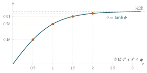

STEP III 2019、第2問
先に進む前に問題を読んでおこう。問題は、OCRが配布している2019年のSTEP問題一式（zipファイル）のSTEP IIIに収録されている： www.ocr.org.uk/Images/696590-2019-past-papers.zip
導入
\(e^x\) とは何なのか、どうすればわかるだろうか。学校では、複利（compound interest）を通して導入されたり、自分自身が導関数（derivative）となる関数として導入されたり、\(\lim (1 + x/n)^n\) として導入されたりする。この問題は別の答えを与える。\(e^{kx}\) は、加法を乗法に変える、すなわち \(\mathrm{f}(x + y) = \mathrm{f}(x)\mathrm{f}(y)\) を満たす唯一の微分可能な関数なのである。この規則と、ただ一つの数 \(\mathrm{f}'(0)\) だけで、関数は完全に決まってしまう。
後半では、もっと奇妙な規則 \(\mathrm{g}(x + y) = \frac{\mathrm{g}(x) + \mathrm{g}(y)}{1 + \mathrm{g}(x)\mathrm{g}(y)}\) について同じことを行う。この式に見覚えがあるとしたら、それは当然である。これは特殊相対性理論（special relativity）におけるアインシュタイン（Einstein）の速度の合成則で、光速を \(1\) としたものなのである。この規則から必然的に導かれる関数は \(\tanh\) であり、そのことから、なぜどんなものも光速を超えて加速できないのかが説明される。
取りかかる前に
\(\mathrm{f}(x + y) = \mathrm{f}(x)\mathrm{f}(y)\) のように、未知のものが関数であるような等式を関数方程式（functional equation）という。
この等式はすべての \(x\) と \(y\) について成り立つ。まず試してみるべき最も有用なことは何だろうか。
特殊な値である。\(y = 0\) とおく（あるいは \(x = y\) や \(y = -x\) とおく）と、手間をかけずに多くの情報が得られることが多い。前半も後半も、そこから始まる。
順を追って解く
段階 1 零での値
\(x = y = 0\) とおくと \(\mathrm{f}(0) = \mathrm{f}(0)^2\) となるので、\(\mathrm{f}(0) = 0\) または \(1\) である。
\(\mathrm{f}(0) = 0\) だとすると、何がまずいのだろうか。
\(\mathrm{f}(0) = 0\) ならば、\(y = 0\) とおくと、すべての \(x\) について \(\mathrm{f}(x) = \mathrm{f}(x)\mathrm{f}(0) = 0\) となる。すると \(\mathrm{f}\) は恒等的に零となり、\(\mathrm{f}'(0) = 0\) であるが、これは \(\mathrm{f}'(0) = k \neq 0\) に矛盾する。よって \(\mathrm{f}(0) = 1\) である。■
段階 2 零での微分係数からすべての点での導関数へ
\((*)\) において \(\mathrm{f}(x + h) = \mathrm{f}(x)\mathrm{f}(h)\) と書き換えよ。極限の外に出せるものは何だろうか。
\[\begin{aligned} \mathrm{f}'(x) &= \lim_{h \to 0} \frac{\mathrm{f}(x)\mathrm{f}(h) - \mathrm{f}(x)}{h} = \mathrm{f}(x)\lim_{h \to 0}\frac{\mathrm{f}(h) - 1}{h} \\ &= \mathrm{f}(x)\lim_{h \to 0}\frac{\mathrm{f}(0 + h) - \mathrm{f}(0)}{h} = \mathrm{f}(x)\,\mathrm{f}'(0) = k\,\mathrm{f}(x). \qed \end{aligned}\] 関数方程式のおかげで、\(0\) の近くでの振る舞いを他のあらゆる点へ運ぶことができるのである。
段階 3 \(\mathrm{f}' = k\mathrm{f}\) を解く
\(\mathrm{u}(x) = \mathrm{f}(x)e^{-kx}\) を考える。すると \(\mathrm{u}'(x) = \bigl(\mathrm{f}'(x) - k\mathrm{f}(x)\bigr)e^{-kx} = 0\) であるから \(\mathrm{u}\) は定数であり、\(\mathrm{u}(0) = \mathrm{f}(0) = 1\) である。したがって \[\mathrm{f}(x) = e^{kx}. \qed\] （変数分離（separation of variables）により \(\int \frac{\mathrm{d}\mathrm{f}}{\mathrm{f}} = \int k\,\mathrm{d}x\) としても同じ答えが得られるが、そのためには \(\mathrm{f}(x) \neq 0\) が必要である。\(\mathrm{u}\) を使う工夫なら、その心配がない。）
段階 4 第二の規則
\(\mathrm{g}\) についての規則で \(y = 0\) とおけ。そこから \(\mathrm{g}(0)\) について何がわかるだろうか。\(|\mathrm{g}(x)| < 1\) はどこで効いてくるのだろうか。
\(y = 0\) とおくと \(\mathrm{g}(x)\bigl(1 + \mathrm{g}(x)\mathrm{g}(0)\bigr) = \mathrm{g}(x) + \mathrm{g}(0)\) となり、これを整理すると \(\mathrm{g}(0)\bigl(\mathrm{g}(x)^2 - 1\bigr) = 0\) となる。\(|\mathrm{g}(x)| < 1\) であるから括弧の中が零になることはなく、よって \(\mathrm{g}(0) = 0\) である。
では、規則を用いて \(\mathrm{g}(x + h) - \mathrm{g}(x)\) を計算し、整理してから \(h\) で割り、\(h \to 0\) とせよ。
\[\mathrm{g}(x + h) - \mathrm{g}(x) = \frac{\mathrm{g}(x) + \mathrm{g}(h) - \mathrm{g}(x) - \mathrm{g}(x)^2\mathrm{g}(h)}{1 + \mathrm{g}(x)\mathrm{g}(h)} = \frac{\mathrm{g}(h)\bigl(1 - \mathrm{g}(x)^2\bigr)}{1 + \mathrm{g}(x)\mathrm{g}(h)}.\] \(h\) で割る。\(h \to 0\) のとき \(\frac{\mathrm{g}(h)}{h} = \frac{\mathrm{g}(h) - \mathrm{g}(0)}{h} \to \mathrm{g}'(0) = k\) であり、また \(\mathrm{g}(h) \to \mathrm{g}(0) = 0\) である（微分可能な関数は連続（continuous）である）から、分母は \(1\) に収束する。したがって \[\mathrm{g}'(x) = k\bigl(1 - \mathrm{g}(x)^2\bigr). \qed\]
段階 5 これを解く
変数を分離せよ。\(|g| < 1\) において導関数が \(\frac{1}{1 - g^2}\) となる関数は何だろうか。
\(|\mathrm{g}| < 1\) であるから割り算ができて、\(\dfrac{\mathrm{g}'}{1 - \mathrm{g}^2} = k\) となる。関数 \(\operatorname{artanh} g = \frac12\ln\frac{1 + g}{1 - g}\) の導関数は \(\frac{1}{1 - g^2}\) であるから、\(\frac{\mathrm{d}}{\mathrm{d}x}\operatorname{artanh}\mathrm{g}(x) = k\) であり、\(\operatorname{artanh}\mathrm{g}(x) = kx + C\) となる。\(\mathrm{g}(0) = 0\) より \(C = 0\) であるから \[\mathrm{g}(x) = \tanh kx. \qed\] 確認：加法定理 \(\tanh(A + B) = \dfrac{\tanh A + \tanh B}{1 + \tanh A\tanh B}\) は、与えられた規則そのものである。
振り返り
まず特殊な値を。 \(y = 0\) とおくことで \(\mathrm{f}(0)\) と \(\mathrm{g}(0)\) が求まった。
一点からすべての点へ。 加法法則によって \(0\) での微分係数をすべての \(x\) へ運び、関数方程式を微分方程式（differential equation）に変えた。
一意性（uniqueness）。 この議論は、\(e^{kx}\) と \(\tanh kx\) がうまくいくことを確かめるだけではない。それらが唯一の可能性であることを示しているのである。関数方程式が定義になりうるのは、このためである。
背後にある数学
日常生活では、列車が速さ \(u\) で走っていて、その中を前向きに速さ \(v\) で歩けば、地面に対する速さは \(u + v\) である。アインシュタインは1905年に、これが近似にすぎないことを示した。\(c\) を光速とすると、正しい規則は \[u \oplus v = \frac{u + v}{1 + uv/c^2}.\] である。速さを \(c\) に対する割合で測れば、これはまさに \(\mathrm{g}\) の規則である。ここで得た結果は、各速度を \(v = \tanh\phi\) と書けば、速度の合成は \(\phi\) を足し合わせることになる、ということを意味している。量 \(\phi = \operatorname{artanh} v\) をラピディティ（rapidity）という。ロケットエンジンによる一回ごとの加速はラピディティを一定量だけ増やすが、すべての \(\phi\) について \(\tanh\phi < 1\) であるから、速度は光速にどんどん近づくものの、決して到達しない（図 3.8.1）。\(0.9c\) と \(0.9c\) を合成すると、\(1.8c\) ではなく \(\frac{1.8}{1.81}c \approx 0.9945c\) になる。

コーシーの関数方程式
最も単純な関数方程式は \(\mathrm{f}(x + y) = \mathrm{f}(x) + \mathrm{f}(y)\) であり、1821年にコーシー（Cauchy）が研究した。\(\mathrm{f}\) が微分可能ならば、この問題の方法によって \(\mathrm{f}(x) = kx\) が示される。実は連続性だけで十分である。しかし、正則性の仮定を一切置かなければ、まったく異様な別の解が存在し、そのグラフは平面全体に稠密に散らばっている。ハメル（Georg Hamel）は1905年にそれらを構成した。その構成には選択公理（axiom of choice）が必要であり、そうした解のどれ一つとして具体的に書き下すことはできない。問題が \(\mathrm{f}\) の微分可能性を強く求めている理由の一つはここにある。この仮定は形式的なものではないのである。
準同型
\(\mathrm{f}(x + y) = \mathrm{f}(x)\mathrm{f}(y)\) は、\(\mathrm{f}\) が実数の加法を正の実数の乗法に変え、両者の構造を保つことを述べている。大学一年の代数の言葉でいえば、\(\mathrm{f}\) は \((\mathbb{R}, +)\) から \((\mathbb{R}_{>0}, \times)\) への群準同型（group homomorphism）であり、対数関数はその逆写像である。数学における最も重要な関数の多くは、このように、それらが保つ構造によって特徴づけられる。第 7.6 節 では \(\tanh\) の幾何学的な意味に出会う。\(\tanh\) は「双曲角」（hyperbolic angle）を測るものであり、その加法定理は双曲的回転の合成から生じるのである。
思考のスキル
式の代わりに、関数が従う規則によってその関数を記述し、その規則に従う関数がただ一つであることを証明する。
数学者が \(\exp\), \(\sin\), \(\cos\) をはじめとする多くの関数を考えるとき、しばしばこのように捉える。つまり式としてではなく、関数方程式や微分方程式のただ一つの解として捉えるのである。そうすることで、それらの計算の仕方だけでなく、なぜそれらが重要なのかがわかる。
次の一歩
正接の規則。 \(\mathrm{g}\) は微分可能で \(\mathrm{g}'(0) = k \neq 0\) であり、両辺が定義されるときには常に \(\mathrm{g}(x + y) = \dfrac{\mathrm{g}(x) + \mathrm{g}(y)}{1 - \mathrm{g}(x)\mathrm{g}(y)}\) が成り立つとする。\(\mathrm{g}'(x) = k\bigl(1 + \mathrm{g}(x)^2\bigr)\) を示し、\(x = 0\) の近くで \(\mathrm{g}(x) = \tan kx\) であることを導け。
コーシーの方程式。 \(\mathrm{f}\) が微分可能で、すべての \(x\), \(y\) について \(\mathrm{f}(x + y) = \mathrm{f}(x) + \mathrm{f}(y)\) が成り立つならば、\(\mathrm{f}(x) = kx\) であることを示せ。
導関数を使わずに。 発展 \(\mathrm{f}(x + y) = \mathrm{f}(x)\mathrm{f}(y)\) と \(\mathrm{f}(1) = a > 0\) だけを仮定する。正の整数 \(n\) について \(\mathrm{f}(n) = a^n\) であることを示し、次に \(\mathrm{f}(1/n) = a^{1/n}\) を示し、さらにすべての正の有理数 \(q\) について \(\mathrm{f}(q) = a^q\) であることを示せ。（これより先に進むには、なぜ連続性が必要なのだろうか。）
ロケット科学。 あるロケットは、噴射するたびに、その時点での自分の座標系に対して速さを \(0.5c\) だけ増やすことができる。静止状態から始めて、\(2\) 回、\(3\) 回、\(4\) 回噴射した後の（出発点に対する）速さはいくらか。ラピディティを用いよ。
さらに学ぶために
Christopher Small, Functional Equations and How to Solve Them (Springer)。『関数方程式とその解き方』。問題を解く人に向けた、読みやすい入門書である。
Edwin Taylor & John Wheeler, Spacetime Physics (W. H. Freeman)。『時空の物理学』。特殊相対性理論への古典的な入門書で、全体を通してラピディティを用いている。
Tom Körner, Calculus for the Ambitious (Cambridge University Press)。『意欲ある人のための微積分』。指数関数や三角関数をその性質から定義しており、まさにこの節の精神に沿った本である。